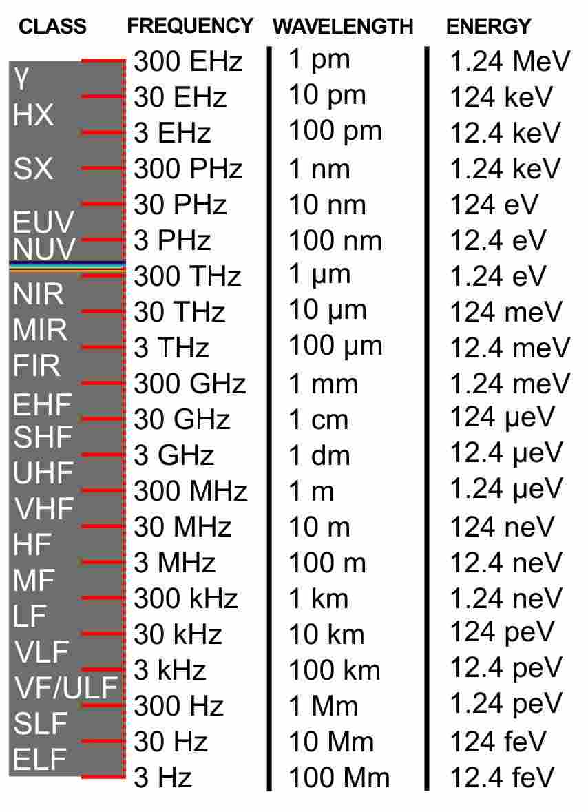

关于毫米波雷达
缘起
幼时
是在小学的时候，第一次听到“雷达”这个词。大概是在一副关于武器的扑克牌上。
感觉酷酷的。
然而一直到最近， 我才知道“雷达”这个音译的来源——RADAR，原来是一个递归缩写
- 最早的定义来自1940年鹰酱海军的造字 RAdio Detection And Ranging
- 而后又有了一个似乎更贴切的定义 Radio Azimuth Direction And Ranging
细品之下，雷和达这俩字太传神了，简直不像是音译。
再大一点儿，学校有无线电小组，当时觉得拿着别人做的东西，听着滴滴响，到底找东西有啥意思？还不如坐在电脑前操着小龟头画出各种奇怪的图形比较对我胃口。
就这样因为年少无知，错过了入门版的雷达，大概也错过了科班EE的经历。
大学毕业
做毕业设计的时候，认识了一个朋友，后来他去了国内某研究所，听说和雷达有点儿关系。
老婆
领导曾经在一家船舶雷达公司工作。
如今
真没想到，如今的我居然会再次接触雷达，像个孩子一样。
序言
概念
雷达，首先向空间发射电磁波，在测量距离内的物体会反射电磁波，雷达监听并处理信号，得到物体的位置信息。
等等！
这不是和ToF很像？！
一想也是， 大家原来都是电磁波。

地球人实际运用雷达始于二战。
因为战争，港口变得异常繁忙，北大西洋的军港经常处于浓雾之中不时有船舶碰撞。
为了解决这个问题，同时也帮助船舶能在夜间作业，英、德两国秘密研发雷达。
英国选择了3MHz-30MHz的频率，因为当时电子技术还十分有限，这是日不落帝国的频率上限。较低的频率导致天线异常庞大，较长的波长也导致分辨率不佳。 但已经能作为岸基固定雷达站，超视距侦测敌方目标。
而当时的德国掌握了大量黑科技，一上来就是短波雷达，频率在十个Ghz到40GHz。并且功率更大。因为频率高，所以天线可以比较小，后来被安装在飞机上。然而德国人的雷达频率过于接近水蒸气的谐振波长，在大气中存在衰减，距离较短，并且容易受到雨雪影响。
之后的雷达技术，日新月异，已经不是我这种门外汉能痴心妄想的了…
那么为什么不用ToF
谁说不用了？等我ToF搞定，也是要用的，小孩子才做选择题。
老子大小通吃，上下全要。
不过有一说一，为什么有了ToF还要去看毫米波雷达？
让我们来比较一下ToF和毫米波雷达的主要特性
| ToF | 毫米波雷达 | |
|---|---|---|
| 最大距离 | ~十几米 | 轻松过百米 |
| 分辨率 | mm级 | cm级 |
| 精度 | 高 | 更高 |
| 烟雾 | 严重影响 | 毫无影响 |
| 透明物体 | 几近失能 | 毫无影响 |
| 测速 | - | 直接测量 |
可以看到，毫米波雷达并没有在所有领域内碾压ToF。
特别是分辨率。这是物理限制，你只能用更短的波长观察更细小的物体。但是在恶略环境，以及玻璃这种属性的物体上，毫米波完胜。
虽然毫米波雷达的绝对分辨率一般，但神奇的是它却可以检测出物体极细小的速度变化（青蛙？）这点后面会细说。
另外，还有一个也许不值一提的特性，在某些特别注重隐私的场合，ToF的“摄像头”模样大概不受欢迎。
至于价格，非常迷。基本所有国际大厂的ToF开发板的价格都很贵，而且还一副爱买不买的气派。批量价格也不算便宜，特别是分辨率稍微高一些的产品，而且还要考虑生产校准的成本。不过国产ToF上线后，这种情况会极大改观。
毫米波雷达方便，一线大厂的原厂开发板也不是遥不可及，批量价格也能接受，而且似乎有一波国产厂家也在路上。
为什么以前没有
也有，但是很贵很贵，这两年技术进步，厂家已经可以把几乎所有的东西集成在一颗芯片里，好戏开始。
正题
集成毫米波SoC
完整的毫米波雷达系统包括：
- TX
- RX
- 时钟
- ADC
- MCU
- DSP
- 等
在高精度雷达中，有两种常见的调制技术
这和TOF也是惊人的相似。
TI的产品线
目前TI的毫米波雷达分成
- IWR 工业等级
- AWR 汽车等级
似乎是一样的，只是AWR等级的器件通过了更多车规。
以IWR1443为例
- IWR 代表工业级
- 第一位1 代表 77GHz系列， 如果是60GHz产品，会是 IWR6xxx
- 第二位4 代表 集成了FFT硬件加速器和MCU， 如果只有RF前端就是2， 如果是RF+MCU+DSP就是6，如果是RF+MCU+FFT+DSP就是8
- 第三位4 代表RX数量
- 第四位3 代表TX数量
比如 IWR6843， 就是60Ghz射频，同时集成DSP/ FFT和MCU， 天线为3发射，4接收。
在毫米波雷达的后续文章中， 将详细介绍其内在原理。
to be continued…